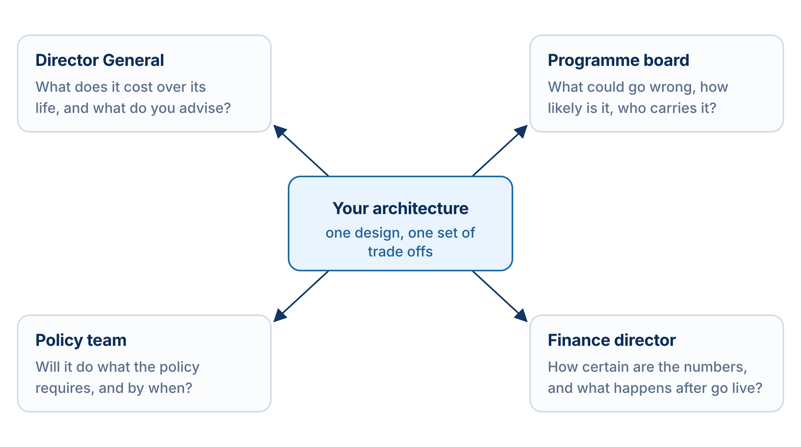
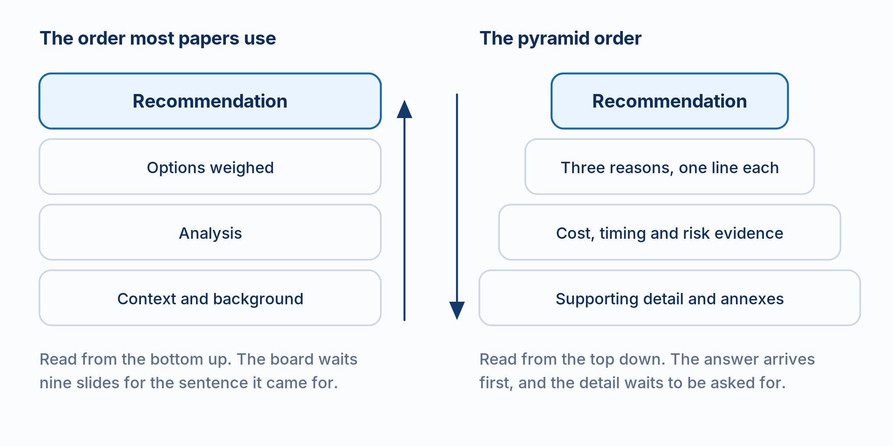
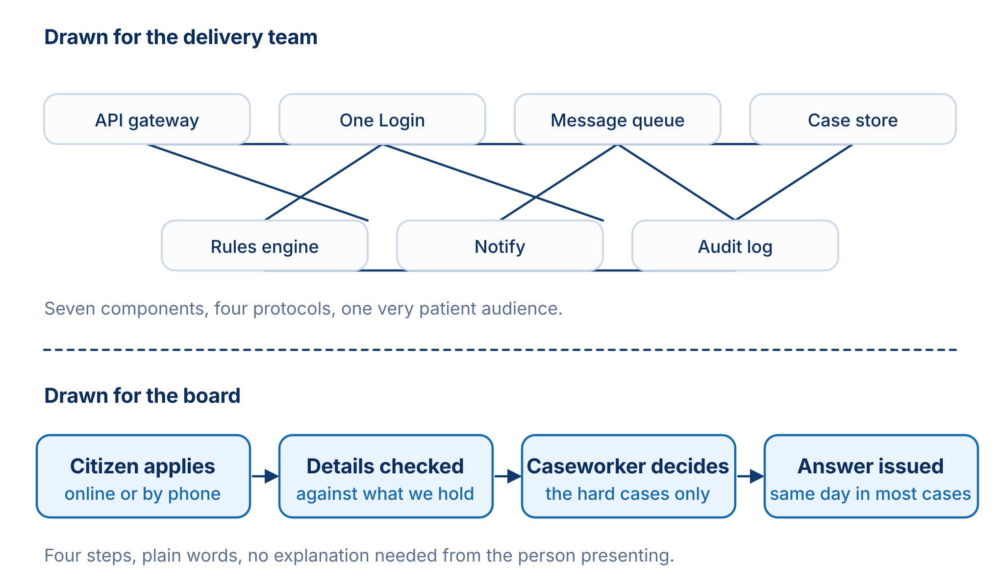
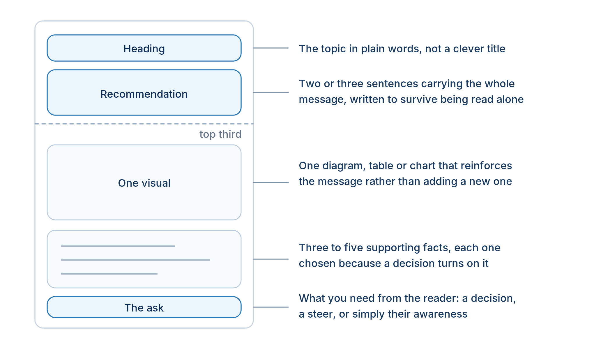
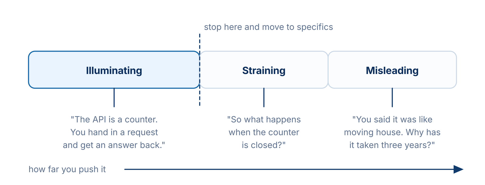

Presenting architecture to non-technical stakeholders
Turn technical detail into clear decisions, trade-offs and action.
You'll come away with:
- How to identify the audience's decision and the detail they need
- A clear way to lead with a recommendation and support it with evidence
- How to explain options, trade-offs and uncertainty without hiding behind jargon
- Ways to use diagrams, one-page briefs and questions effectively
Start with the decision, not the diagram
A non-technical stakeholder is not someone who cannot understand architecture. They are someone whose expertise and responsibilities lie elsewhere. They may own the policy outcome, funding, delivery, operations or risk. Your explanation should give them enough understanding to act in that role.
The Government Functional Standard for Project Delivery says communications should match stakeholders' needs and put the right message before the right audience at the right time. Before preparing a paper or presentation, ask:
- Who will receive it, and what authority do they have?
- What decision, steer or action is needed?
- Which outcomes, costs, timescales, dependencies and risks matter to that decision?
- Which evidence is reliable, and where is there uncertainty?
- What detail belongs in the main message, and what should remain available behind it?

Do not assume that a role always asks one fixed question. A finance lead may challenge delivery risk; a policy lead may need to understand data quality. Confirm what the people in this meeting need rather than presenting to a stereotype.
Start with the consequence of the design. Instead of saying, “This service uses asynchronous messaging,” explain what that means here: “The service can accept a request while the case system is temporarily unavailable. Processing may be delayed, so queued work must be monitored and failures handled.” The technical term can remain when it matters, but define it and connect it to an outcome, cost or risk.
Clear explanation does not itself approve a design or transfer responsibility. Decisions and risk acceptance must still follow the organisation's governance and delegated authority. Record what was decided, by whom, under which conditions and with which follow-on actions.
Pitch the explanation at the decision the audience must make, not at the detail you happen to know.
Lead with the answer, then show the reasoning
For a decision paper or short presentation, state the recommendation early. Barbara Minto's Pyramid Principle organises supporting ideas beneath one main point. It is a useful communication structure, not a mandatory government format, and it is less suitable when the purpose is open exploration rather than a decision.
A practical opening can contain:
- the recommendation or current position
- the outcome it supports and why action is needed now
- the strongest reasons and evidence
- the material trade-offs, risks and uncertainties
- the decision or action required, from whom and by when
For example: “We recommend reusing the department's existing notification service because it meets the confirmed requirements and avoids creating another service to support. The main unresolved issue is the supplier onboarding date. We need a decision today on the approach and a named owner to confirm the date before delivery is committed.”

Use the same pattern inside the document. Open each section with its point. Give slides titles such as “Reusing the platform avoids duplicate support capability” rather than “Platform option”. Keep detailed evidence and caveats available, but do not make the audience search for the conclusion.
Answer-first does not mean evidence-free. If a recommendation is not yet justified, say what is known, what remains uncertain and which work or decision should come next.
Present options through their consequences
Technology labels rarely give a decision-maker enough information to compare options. “Microservices”, “software as a service” and “serverless” describe approaches, not their effect in your context. Explain each option against criteria linked to the requirements and decision.
Where the Green Book applies, appraisal should help decision-makers understand the costs, benefits, risks and trade-offs of different options. It requires evidence-based, objective and impartial advice, including clear communication of uncertainty. The depth of an architecture comparison should remain proportionate to the choice and its governance route.
| Dimension | What to make visible |
|---|---|
| Outcome and fit | Which requirements and policy or service outcomes the option meets. |
| Whole-life cost | Setup, running, change and exit costs, with assumptions and ranges. |
| Delivery | Timescale, critical dependencies, skills and confidence in the plan. |
| Operation | Support model, service ownership, monitoring, recovery and change burden. |
| Risk and uncertainty | Material exposure, controls, owners, residual risk and weak evidence. |
| Dependency and exit | Supplier or platform commitments, interoperability and the cost of changing course. |
Use the same criteria and a comparable level of evidence for every credible option. If you score options, define the scale and show the evidence behind each rating. A comparison in which the preferred option wins every row is a warning to check for biased criteria or uneven evidence.
Give a recommendation and its reason. The architect advises; the authorised decision-maker decides. If the evidence does not support a preferred option, recommend the next piece of work needed to resolve the uncertainty instead of manufacturing confidence.
Use the view that answers the question
A detailed architecture diagram may be correct and still be wrong for the meeting. The NCSC's guidance on drawing good architecture diagrams recommends choosing a lens and level of detail for the reader, starting with a clear overview and separating more detailed views.

Useful views for senior audiences can include a service flow, system context, before-and-after comparison, dependency map, delivery timeline, cost profile or options table. Technical components still belong in the main view when the decision concerns a boundary, control, supplier dependency or operational responsibility. Remove detail because it is irrelevant to the question, not merely because it is technical.
For each visual:
- give it a title that states the point or question
- include only the elements needed to support that point
- use plain labels and explain necessary specialist terms
- label important relationships rather than relying on unexplained lines
- distinguish current, interim and target states
- make it understandable when forwarded without your narration
Accessibility still applies. The GOV.UK Design System guidance on images says complex diagrams need short alternative text and a longer description that provides the same information in text. Do not rely on colour alone to distinguish ratings or relationships; WCAG 2.2 success criterion 1.4.1 requires another visual means of conveying the information.
Build a one-page decision brief
A one-page brief can help when a decision can be summarised without hiding material evidence. It is a communication technique, not a universal government requirement. Use the organisation's required submission, business case or governance template where one applies.

A useful brief normally makes these things easy to find:
- the topic, purpose and decision owner
- the recommendation and the reason for it
- the outcome or problem being addressed
- the options and material trade-offs
- cost, delivery and risk evidence, including assumptions and uncertainty
- the decision, steer or acknowledgement required
- the status, date and links to supporting detail
The brief should stand alone, but it does not replace the architecture, appraisal or evidence behind it. Link to those sources instead of shrinking the type or removing a material caveat. If the decision cannot be represented safely on one page, use more space.
For spending proposals within its scope, the Green Book says a business case should begin with an executive summary covering all five dimensions and recommends an appraisal summary table for shortlisted options. A one-page architecture brief can support that process; it does not replace the required business case.
Handle questions and uncertainty directly
Prepare for the questions the decision makes likely:
- What does it cost, what drives the range and what happens after go-live?
- How long will it take, what is on the critical path and how confident is the estimate?
- What could prevent the outcome, who owns the risks and what remains after treatment?
- Why is the recommended option stronger than the alternatives?
- Which assumptions, suppliers, services or decisions does it depend on?
- How difficult would it be to change course?
When you do not know, do not bluff or hide behind detail. State what you know, what is uncertain, how it will be checked and whether the decision depends on the answer. For example: “I do not have a confirmed figure. I will validate the supplier estimate and return by Thursday. If approval depends on that figure, I recommend that we wait.” Then complete the action when promised.
Do not assume you know the concern behind a broad question. “What about security?” could mean data exposure, service availability, assurance or personal accountability. Ask which risk the person wants to explore, then answer it plainly or bring in the relevant specialist.
The Orange Book requires timely, accurate and useful risk reporting to support decision-making. Be explicit about evidence, assumptions and uncertainty. After the discussion, record the decision, conditions, owners, accepted risks and actions through the appropriate governance process.
Credibility comes from clear evidence, honest uncertainty and reliable follow-through.
Use analogies as a bridge, not as evidence
An analogy can make one unfamiliar idea easier to enter. It should not become a model for the whole design. For a simple request-and-response interaction, a service counter can illustrate one point: a caller follows an agreed interface and receives a response without needing to know every internal step.

The counter analogy does not explain asynchronous messages, identity checks, retries, rate limits or failure handling. Say where the comparison stops, then move to the actual behaviour. Prefer a concrete service example, measured before-and-after result or direct explanation when it is clearer.
Avoid using an analogy to understate cost, risk or complexity. It can aid understanding; it is not evidence for a recommendation.
Questions to ask before presenting
- Who is the primary audience, and what authority do they have?
- What decision, steer or action is required?
- Does the opening state the recommendation and why it matters now?
- Are credible options compared against the same relevant criteria?
- Are costs, timescales, risks and benefits supported by evidence?
- Are assumptions, ranges and unresolved uncertainties visible?
- Does each visual answer one question and remain understandable on its own?
- Is the same information available to people who cannot use the visual?
- Is supporting detail available without crowding the main message?
- Will decisions, conditions, risk acceptance and actions be recorded afterwards?
This guide gives practical techniques for presenting architecture around UK government services. Except where a source states a requirement within its scope, the structures, examples and questions are teaching aids rather than a mandatory presentation, paper or approval format. Follow the governance and document requirements of the organisation making the decision.
Last reviewed September 2026 against the primary government, NCSC, W3C and original Pyramid Principle sources below. Guidance changes, so check the source before relying on it.